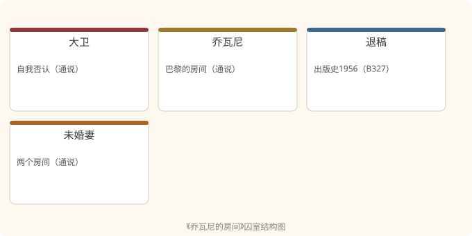

乔瓦尼的房间
一、基本信息
| 作者 | 詹姆斯·鲍德温 |
|---|---|
| 成书/出版 | 1956年（Britannica B327：Giovanni's Room (1956)——Knopf拒稿后由Dial Press接受） James Baldwin — Encyclopaedia Britannica（百科全书） |
| 国别/地区 | 美国 |
| 时代 | 现当代 · 20世纪50年代 |
| 体裁 | 长篇小说 |
| 语言 | 英语 |

《乔瓦尼的房间》囚室结构图（主题·结构图）
二、创作背景
Britannica（B327）：Giovanni's Room——被 Knopf 以同性恋题材为由退稿，后由 Dial Press 接受出版。
作者页（B327）：鲍德温首作《向苍天呼吁》（1953）为其'semiautobiographical first and finest novel'；本剧为转向巴黎与性向题材的第二作。
题材（通说待核）：美国青年大卫在巴黎与意大利酒保乔瓦尼的感情——自我否认与毁灭。
三、内容脉络
大卫在巴黎与乔瓦尼的恋情及其自我否认（情节通说待核——B327未载剧情）。
订婚的未婚妻与两个'房间'的抉择（通说待核）。
四、主要人物表
| 人物 | 身份 | 说明 |
|---|---|---|
| 大卫 | 美国青年 | （通说待核，B327未载） |
| 乔瓦尼 | 酒保 | （通说待核，B327未载） |
五、主题与艺术特点
- 自我否认与身份的囚室（通说待核）。
- 1950年代同性恋题材的出版史（B327：Knopf拒稿、Dial Press接受）。
- 流亡巴黎的美国人（通说待核）。
六、影响与评论
- Britannica：Giovanni's Room 出版史——Knopf退稿、Dial Press接受（B327）。
James Baldwin — Encyclopaedia Britannica（百科全书） - Britannica：鲍德温小说列表第二作（B327）。
James Baldwin — Encyclopaedia Britannica（百科全书）
七、阅读建议
难点
- 1950年代性向语境。
- 巴黎美国流亡者圈。
- 《乔瓦尼的房间》中译本（人民文学/上海译文等——通说待核）。
- 英文原版。
鲍德温第二作；与《向苍天呼吁》对照读。
八、待核实
- 大卫/乔瓦尼/赫拉人名核对（B327未载）。
- 1956年出版（Dial Press说）待核。
- 退稿信内容（'发育不良'说）待核。